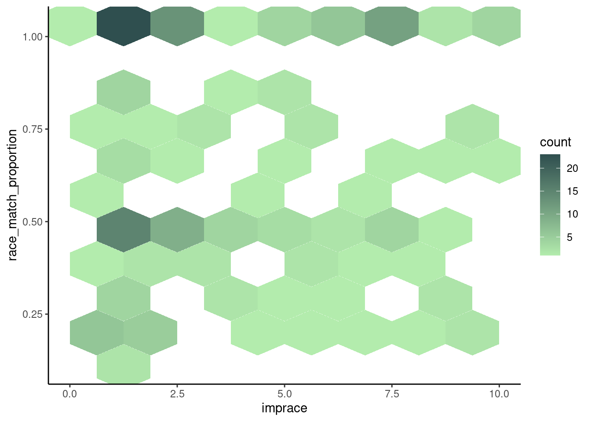
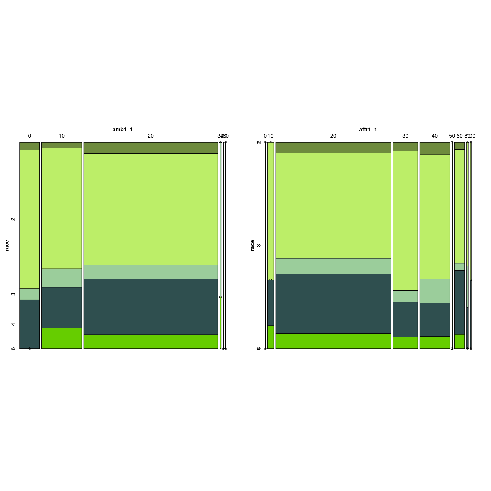
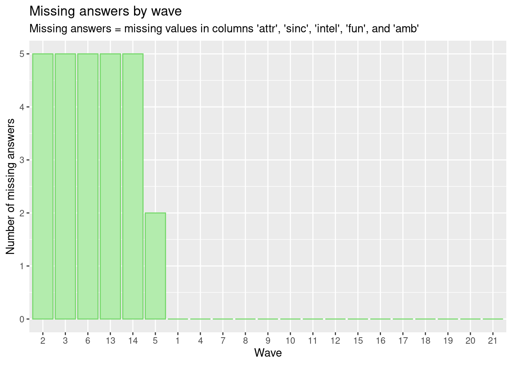
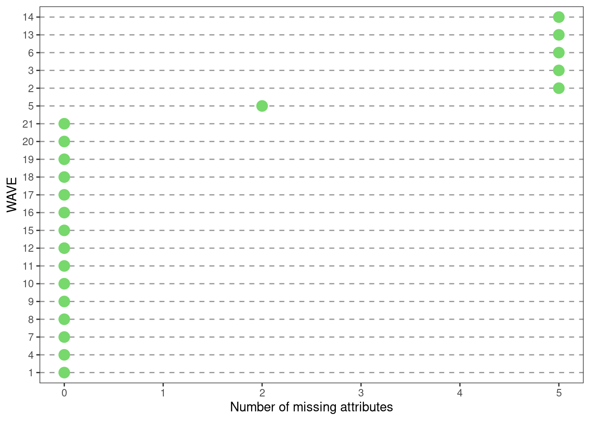
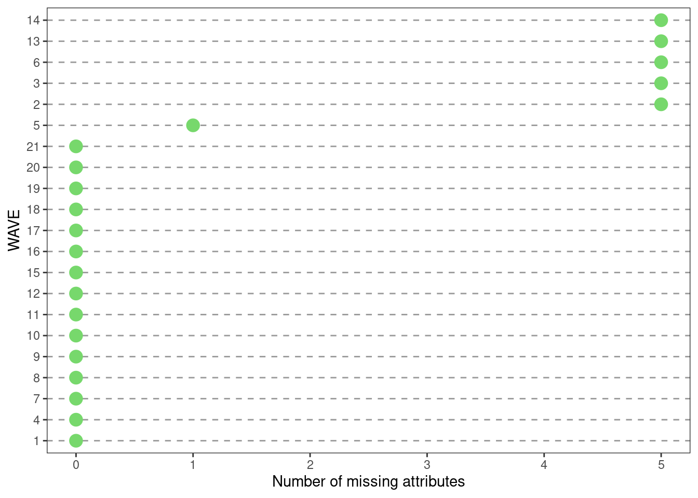
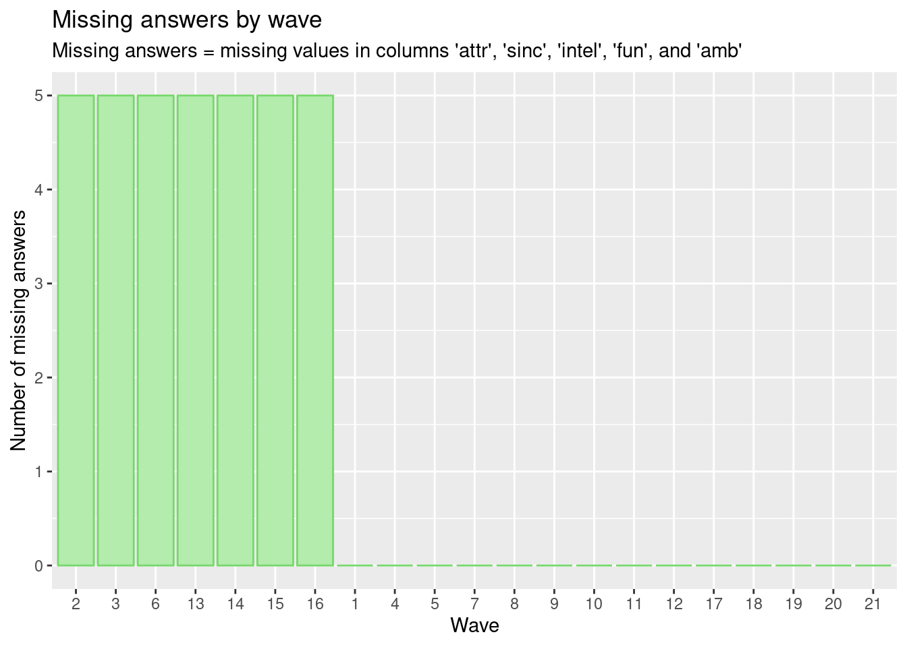
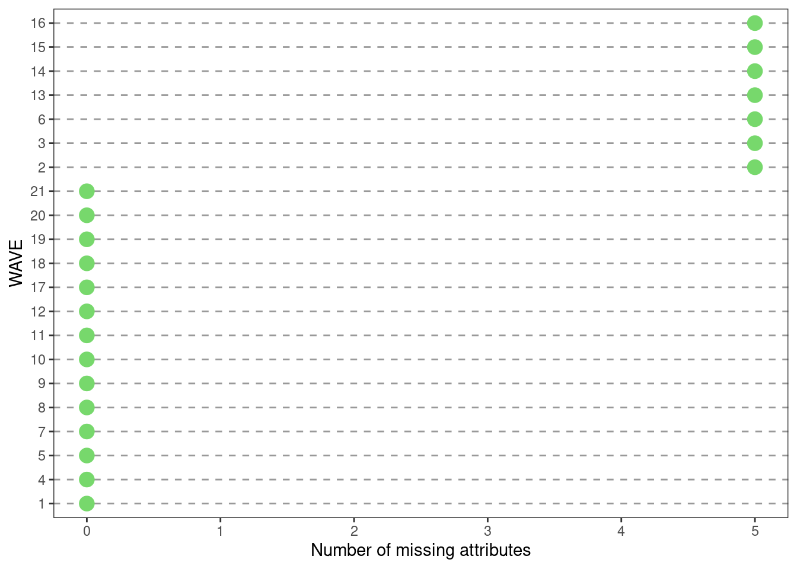
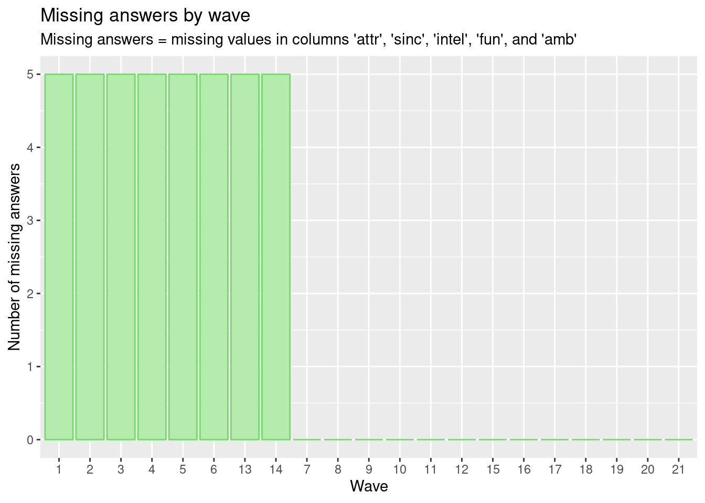

Chapter 4 Missing values
First, we analyzed our data set to on groups or subsets of our data for which we could analyze missing data. Our data has 8378 observations and 195 variables, with lots of missing values. The speed dating experiment was done in 21 waves. Below is the list of dates on which the experiment was done:
Wave 01: Oct 16, 2002
Wave 02: Oct 23, 2002
Wave 03: Nov 12, 2002
Wave 04: Nov 12, 2002
Wave 05: Nov 20, 2002
Wave 06: Mar 26, 2003
Wave 07: Mar 26, 2003
Wave 08: Apr 02, 2003
Wave 09: Apr 02, 2003
Wave 10: Sep 24, 2003
Wave 11: Sep 24, 2003
Wave 12: Oct 07, 2003
Wave 13: Oct 08, 2003
Wave 14: Oct 08, 2003
Wave 15: Feb 24, 2004
Wave 16: Feb 25, 2004
Wave 17: Feb 25, 2004
Wave 18: Apr 06, 2004
Wave 19: Apr 06, 2004
Wave 20: Apr 07, 2004
Wave 21: Apr 07, 2004
To pick subsets of our data, we chose 11 important variables along with 5 variables which answered survey questions for each wave. The 12 important variables we chose are:
1. iid: unique subject number, grouped by wave id gender
2. pid: partner’s iid number
3. gender: Female = 0, Male = 1
4. match: 1 = yes, 0 = no
5. age: age of subject
6. field: field of study
7. race: Black/African American = 1, European/Caucasian-American = 2, Latino/Hispanic American = 3, Asian/Pacific Islander/Asian-American = 4, Native American = 5, Other = 6
8. from: Where are you from originally (before coming to Columbia)?
9. income: Median household income based on zipcode
10. goal: What is your primary goal in participating in this event? Seemed like a fun night out = 1, To meet new people = 2, To get a date = 3, Looking for a serious relationship = 4, To say I did it = 5, Other = 6
11. career: What is your intended career?
12. wave: wave number
These are the common variables we chose to analyze missing values. There were several questions in this experiment, but we chose five in specific, which were most relevant to our project and analyzed missing values for all five questions separately.
The five questions are:
Question 1_1:
We want to know what you look for in the opposite sex.
13. attr1_1: Attractive
14. sinc1_1: Sincere
15. intel1_1: Intelligent
16. fun1_1: Fun
17. amb1_1: Ambitious
These are the 5 other variables of question 1_1.
Question 2_1:
What do you think the opposite sex looks for in a date?
13. attr1_1: Attractive
14. sinc1_1: Sincere
15. intel1_1: Intelligent
16. fun1_1: Fun
17. amb1_1: Ambitious
These are the 5 other variables of question 2_1.
Question 3_1:
How do you think you measure up?
13. attr1_1: Attractive
14. sinc1_1: Sincere
15. intel1_1: Intelligent
16. fun1_1: Fun
17. amb1_1: Ambitious
These are the 5 other variables of question 3_1.
Question 4_1:
Now we want to know what you think MOST of your fellow men/women look for in the opposite sex
13. attr1_1: Attractive
14. sinc1_1: Sincere
15. intel1_1: Intelligent
16. fun1_1: Fun
17. amb1_1: Ambitious
These are the 5 other variables of question 4_1.
Question 5_1:
And finally, how do you think others perceive you?
13. attr1_1: Attractive
14. sinc1_1: Sincere
15. intel1_1: Intelligent
16. fun1_1: Fun
17. amb1_1: Ambitious
These are the 5 other variables of question 5_1.
4.1 Number of missing attributes for each wave per question
First, we plotted a barplot of the maximum number of missing answers given (for variables 13 - 17) per wave for each question. This helps us understand which waves had people that had a considerable amount of missing values for each question.
For Question 1_1: 
We can observe that in waves 2, 3, 6, 13, and 14; there are people who did not answer any of the 5 attributes in question 1_1. In wave 5, the maximum number of missing attributes is 1, so everyone rated at least 4 of 5 attributes. In all other waves, all attributes were answered by everyone.
For Question 2_1: 
Same as question 1_1, we can observe that in waves 2, 3, 6, 13, and 14; there are people who did not answer any of the 5 attributes in question 2_1. In wave 5, the maximum number of missing attributes is 1, so everyone rated at least 4 of 5 attributes. In all other waves, all attributes were answered by everyone.
For Question 3_1:
We can observe that in waves 2, 3, 6, 13, 14, 15 and 16; there are people who did not answer any of the 5 attributes in question 3_1. In all other waves, all attributes were answered by everyone. Here, the maximum number of missing answers given are all or none.
For Question 4_1: 
We can observe that in waves 1, 2, 3, 4, 5, 6, 13, and 14; there are people who did not answer any of the 5 attributes in question 3_1. In all other waves, all attributes were answered by everyone. Here too, the maximum number of missing answers given are all or none.
For Question 5_1: 
We can observe that in waves 1, 2, 3, 4, 5, 6, 7, 8, 9, 13, 14, 15, and 16; there are people who did not answer any of the 5 attributes in question 3_1. In all other waves, all attributes were answered by everyone. Here too, the maximum number of missing answers given are all or none.
4.2 Missing patterns question
Since we have 8378 observations, we used row percentages instead of row count in our missing values plot. Below are the plots for missing values per question.
For question 1_1:
We can observe that we have 9 missing value patterns in the data for question 1_1. We can see that almost above 90% of the observations come under the complete cases pattern. The second most observed pattern is that there is missing values for attractiveness, sincerity, intelligence, fun, ambitious, age, goal, and race. The third most observed pattern is that there is missing values only for age.
Moreover, we observe that about 14% of the rows have a missing value for ambitious, which is the highest percentage of missing rows for question 1_1. The second most missing column is age, with slightly lower than 14% of the rows missing it; followed by fun, with about 13% of the rows missing it.
For question 2_1:

We can observe that we have 8 missing value patterns in the data for question 2_1. We can see that almost above 90% of the observations come under the complete cases pattern. The second most observed pattern is that there is missing values for attractiveness, sincerity, intelligence, fun, ambitious, age, goal, and race. The third most observed pattern is that there is missing values only for age.
Moreover, we observe that about 14% of the rows have a missing value for age, which is the highest percentage of missing rows for question 2_1. The second most missing column is ambitious, with about 13% of the rows missing it; followed by fun, with about 12% of the rows missing it.
For question 3_1:

We can observe that we have 7 missing value patterns in the data for question 3_1. We can see that almost above 90% of the observations come under the complete cases pattern. The second most observed pattern is that there is missing values for attractiveness, sincerity, intelligence, fun, ambitious, age, goal, and race. The third most observed pattern is that there is missing values only for age.
Moreover, we observe that all five attributes, attractiveness, sincerity, intelligence, fun, and ambitious are missing in about 13.5% of the rows, which is the highest percentage of missing rows for question 3_1. The second most missing column is age, with about 12.5% of the rows missing it; followed by goal, with about 10% of the rows missing it.
For question 4_1:

We can observe that we have 8 missing value patterns in the data for question 4_1. We can see that almost above 75% of the observations come under the complete cases pattern. About 20% of the observations have missing values for for all five attributes, i.e., attractiveness, sincerity, intelligence, fun, and ambitious.
The second most observed pattern is that there is missing values for all five attributes, i.e., attractiveness, sincerity, intelligence, fun, and ambitious. The third most observed pattern is that there is missing values for attractiveness, sincerity, intelligence, fun, ambitious, age, goal, and race.
Moreover, we observe that all five attributes, attractiveness, sincerity, intelligence, fun, and ambitious are missing in about 19% of the rows, which is the highest percentage of missing rows for question 4_1. The second most missing column is age, with about 1% of the rows missing it; followed by goal, with less than 1% of the rows missing it.
For question 5_1:

We can observe that we have 8 missing value patterns in the data for question 4_1. We can see that almost 58% of the observations come under the complete cases pattern. About 20% of the observations have missing values for for all five attributes, i.e., attractiveness, sincerity, intelligence, fun, and ambitious.
The second most observed pattern is that there is missing values for all five attributes, i.e., attractiveness, sincerity, intelligence, fun, and ambitious. The third most observed pattern is that there is missing values for attractiveness, sincerity, intelligence, fun, ambitious, age, goal, and race.
Moreover, we observe that all five attributes, attractiveness, sincerity, intelligence, fun, and ambitious are missing in about 20% of the rows, which is the highest percentage of missing rows for question 4_1. The second most missing column is age, with about 1% of the rows missing it; followed by goal, with less than 1% of the rows missing it.
We have noted only the top three of the most seen pattern and the number of missing rows per column. However, we could bot make a note for others as their percentages are too small to interpret from the plot.